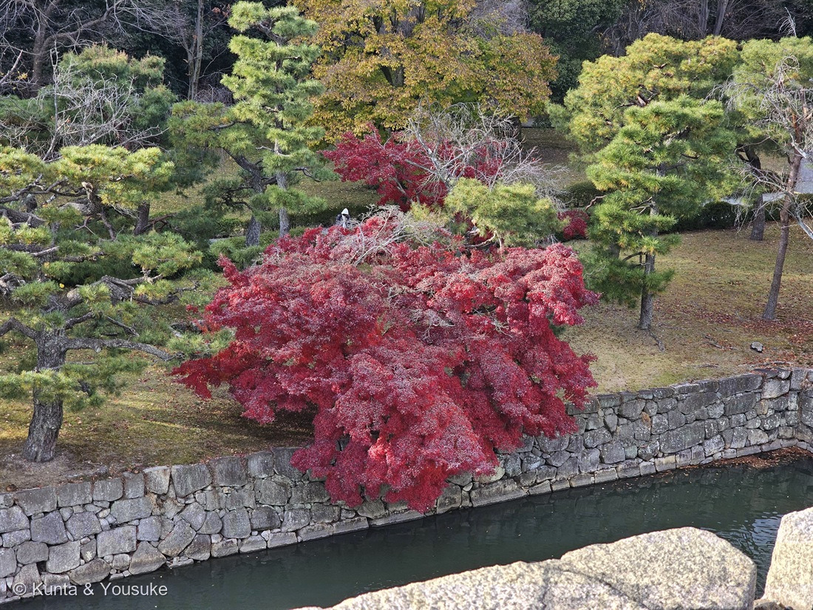
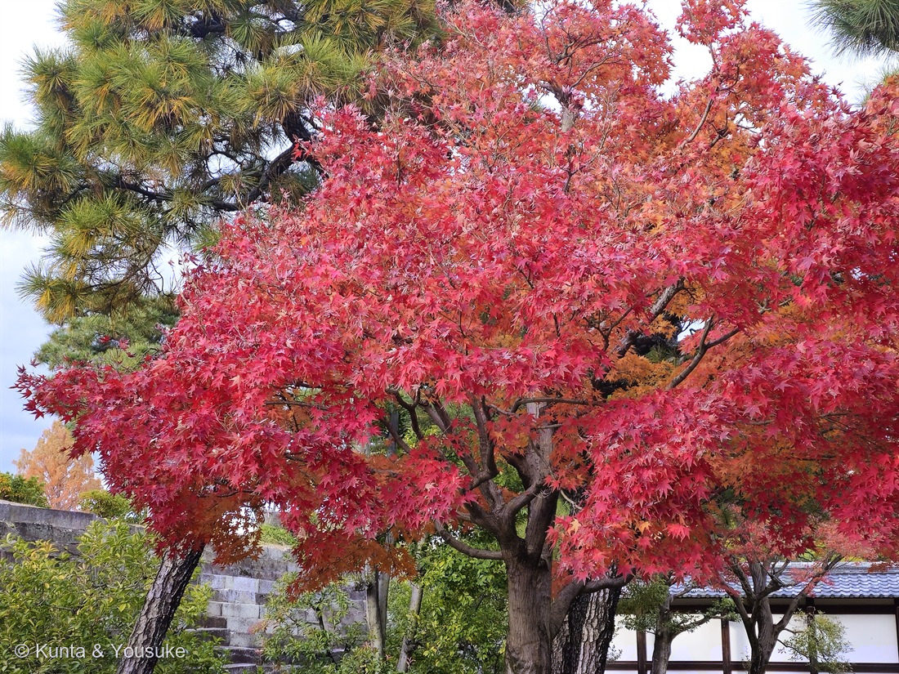
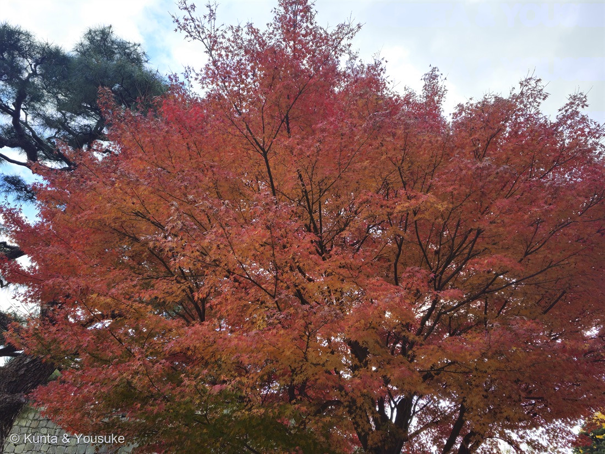
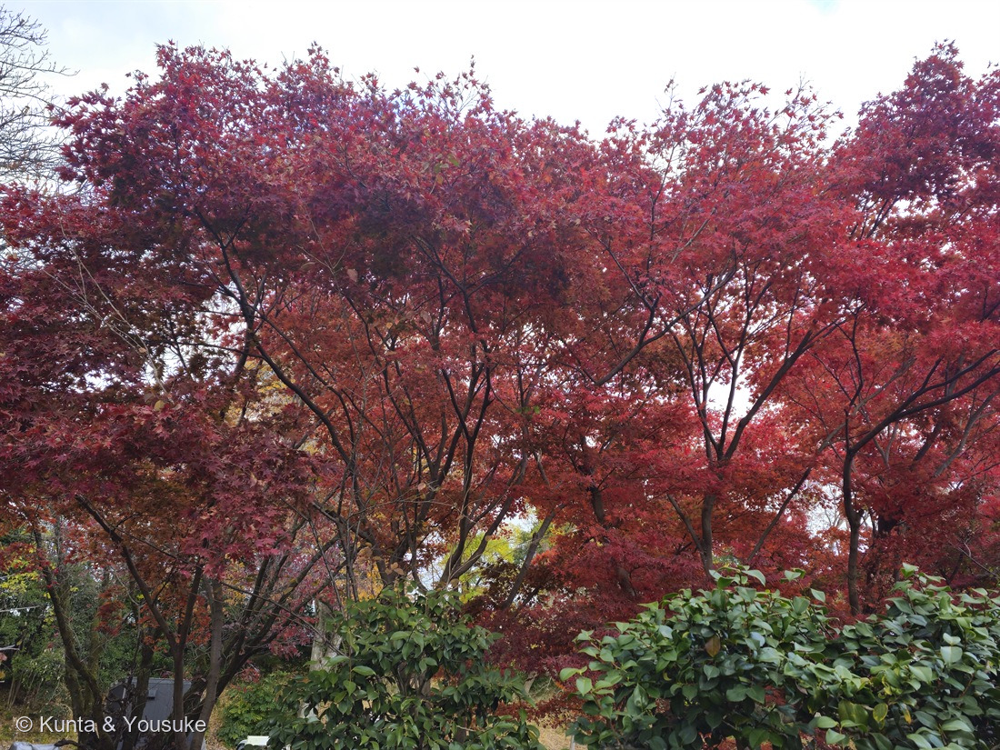

地図を読み込んでいるよ…
🔍 写真も地図も、押しているあいだ拡大して見られるよ（スマホは指を置いてすこし待ってね）。
🌍 の地図＝この子がもともと自生している場所を緑に。日本（本州の福島県以南、四国、九州）・朝鮮。山地のやや湿った場所に生える。京都をはじめ庭園や公園に広く植えられ、園芸品種もとても多い。
⭐日本の木だよ——本州の福島県以南、四国、九州、そして朝鮮（三河の植物観察）。⚠北海道と東北の北のほう（青森・岩手・宮城・秋田・山形）は、三河が分布に挙げていないので塗っていない。⭐山地のやや湿った場所に生える木だけど、⭐⭐京都をはじめ庭園や公園に広く植えられていて、園芸品種もとても多い——だから、写真の株が自生のものか植えられたものかは、地図では分からないよ（この写真は元離宮二条城の植栽）。⭐中国には自生しないけれど、中国でも広く栽培されている。
⚠ 地図は国（日本と中国だけ県・省）までしか塗れないから、ほんとうの分布より広く見えていることがあるよ。地図はだいたいの場所。正確なところは、上の文を見てね。
モミジ（イロハモミジのなかま）
Acer palmatum Thunb.（広い意味で）
別名 · イロハモミジ（伊呂波紅葉）／イロハカエデ／タカオモミジ（高雄紅葉） ／ 英 · Japanese maple ／ 中国名 · 鸡爪枫 ／ 見どころ · ⭐⭐⭐「モミジ」は、もともと木の名前ではなく「色づく」という動詞だった
ムクロジ科 · Sapindaceae（カエデ属 Acer・ムクロジ目 Sapindales）── ⚠かつてはカエデ科（Aceraceae）。APG分類でムクロジ科に移された。182 ケムリノキ・183 ヌルデと同じムクロジ目
燻太さんの言葉「もう四枚はモミジだよ。」……⭐187 イチョウ・188 ラクウショウと同じ日、同じ二条城の中の子。⭐⭐そして、この赤とイチョウの黄色は、まったくちがうやり方でできていたよ。
名前と学名の由来 ── ⭐⭐⭐ 「モミジ」は、もともと木の名前じゃなかった
⭐⭐これ、ぼくは調べていていちばんびっくりしたよ。
- ⭐⭐⭐モミジは、動詞から来ている。——秋に草木が黄色や赤色に変わることを意味する動詞「もみず（もみつ・もみづ）」が名詞になって「もみじ」になり、そこから転じて、とくに目立って色を変えるカエデの仲間を「モミジ」と呼ぶようになった。
- ⭐⭐⭐——つまり「モミジ」は、もともと木の名前ではなくて、「色づく」という出来事の名前だったんだ。⭐いちばん見事に色づく木が、その出来事の名前を、そのまま自分の名前にしてもらった。
- ⭐カエデのほうは、形から来ている。——葉の形が蛙（かえる）の手に似ているところから「かへるで」→「かえで」。⭐万葉集にも「蛙手（かへるて）」の表記が見られる。
- ⭐⭐そして学名 Acer palmatum の palmatum は「手のひら状の」。⭐⭐⭐——カエデ（蛙の手）と palmatum（手のひら）は、東と西で、同じところを見ている。⭐186 クレマチスのときと、同じ形だね。
⭐⭐そして「イロハ」は、数えた名前だよ。
- ⭐⭐⭐イロハモミジの「イロハ」は、葉の裂片を数えると「いろはにほへと」と7つあることに由来する〔三河の植物観察〕。⭐指を折って数える名前なんだ。
- ⭐別名タカオモミジ（高雄紅葉）は、京都の高雄から。⭐⭐——燻太さんが撮ったのも、京都。⭐この木の別名は、この写真が撮られた土地の名前だったんだね。
- もうひとつの別名はイロハカエデ（いろは槭）。
この植物のこと ── ⭐ 科ごと、引っ越した子
- ⚠⭐この子は「カエデ科」ではなくなった。——かつてはカエデ科（Aceraceae）だったけれど、いまのAPG分類ではムクロジ科（Sapindaceae）に含められている〔三河の植物観察〕。⭐182 ケムリノキや183 ヌルデと同じムクロジ目だよ。
- 落葉高木で、樹高8〜15m〔三河の植物観察〕。幹は緑褐色〜淡灰褐色でなめらか、古くなると樹皮に縦の割れ目が入る。
- ⭐葉は対生。葉身は長さ3〜6cm・幅4〜8cmの類円形で、掌状に5〜7(9)裂〔三河の植物観察〕。⭐裂片は披針形で先が尖る。
- 花期4〜5月。長さ3〜4cmの散房状花序に、雄花と両性花が10〜20個まじって垂れ下がる。花は直径約5mmで、赤色の萼片が目立つ〔三河の植物観察〕。⭐紅葉ばかり見られる木だけど、春には小さな赤い花が咲くんだね。
- ⭐果実は翼果。普通は果柄が上向きに葉から上に突き出し、翼がほぼ水平〜鈍角に開く。分果は長さ約1.5cm〔三河の植物観察〕。⭐くるくる回って落ちる、あのプロペラだよ。
- 分布は日本（本州の福島県以南、四国、九州）と朝鮮〔三河の植物観察〕。⭐中国には自生しないけれど、中国でも広く栽培されている。
同定について ── ⚠ 属までにした理由
⭐燻太さんが「モミジだよ」と教えてくれたとおり、カエデ属（Acer）で間違いないよ。⭐でも、種は決めなかった。理由を書くね。
- ⭐写真から言えたこと＝掌状に5〜7裂した葉／裂片が細く、先がとがる／葉が対生／幹は灰褐色でなめらか／株立ちになって枝を横に大きく広げる。⭐どれもイロハモミジに合う。
- ⚠⚠でも、分かれ道は「葉のふちのギザギザ」なんだ。
- イロハモミジ＝不規則なやや大きい単鋸歯〜重鋸歯（変異が多い）
- オオモミジ＝規則的な細かい単鋸歯
- ヤマモミジ＝欠刻状重鋸歯〔三河の植物観察〕
- ⚠写真をいちばん大きくしても、この鋸歯までは読めなかった。⭐だから「合っている証拠」は数えずに、属で止めたよ（087 ヤマモモで決めたとおり）。⭐そして187 イチョウで書いたとおり、樹木は厳しめに見る約束だからね。
- ⚠もうひとつ＝庭園の植栽だから、園芸品種の可能性もある。⭐イロハモミジには数えきれないほどの園芸品種があるんだ。
- ⭐それでも「イロハモミジの可能性が高い」とは言えると思う。——⭐別名タカオモミジは京都の高雄に由来していて、京都の庭園でいちばんふつうに植えられているのがこの子だからね。
⭐⭐⭐ 黄色と赤は、まったくちがうやり方だった
⭐⭐ここが、この回のいちばん大きな発見だよ。
⭐187 イチョウの写真①には、黄色のイチョウと、うしろの赤い木と、緑のマツがならんでいた。⭐⭐そして——黄色くなるのと赤くなるのは、体の中で起きていることが、まるでちがうんだ。
- ⭐まず、どちらにも共通すること。——秋になると、葉のクロロフィル（葉緑素）を分解して養分に変え、幹へと送る。だからクロロフィルがへって、緑色がしだいにうすくなる〔キヤノンサイエンスラボ〕。
- ⭐⭐⭐黄色（イチョウ）＝もともとあった色が、見えてくる。——多くの葉にはクロロフィルのほかにも、カロテン類やキサントフィル類などの色素（まとめてカロテノイド）がふくまれている。これらの色は、クロロフィルが多いときは緑にかくれて感じられません〔キヤノンサイエンスラボ〕。⭐つまりイチョウの黄色は、春からずっと葉の中にあった。緑が引いて、やっと見えただけ。
- ⭐⭐⭐赤（モミジ）＝新しく作る。——モミジなど赤くなる植物では、葉緑体の分解が始まる前にアントシアニンという物質がつくられはじめます〔キヤノンサイエンスラボ〕。福岡県のページも「クロロフィルが分解されるとともに、アントシアニン（赤色）が作られることで赤い葉になります」とする。
- ⭐⭐⭐——だから、同じ「紅葉」という言葉でも、中身は正反対なんだ。⭐イチョウは脱いでいる。モミジは塗っている。
- ⚠⭐では、なぜわざわざ塗るんだろう。——そこは、まだ完全には分かっていない。⭐いまのところ「アントシアニンは紫外線をよく吸収するので、強すぎる光をやわらげる役割がある」と考えられている〔キヤノンサイエンスラボ〕。⭐福岡県のページはもう一歩ふみこんで、「光を遮りクロロフィルが吸収する光を減少させることで、分解中の光合成装置のクロロフィルから活性酸素が作られてしまう恐れを少なくする役割」としている。
- ⭐⭐つまり——葉をたたむあいだ、大事な部品を安全に外すための、日よけ。⭐赤は、去っていく葉が最後にかける、自分への日傘なのかもしれない。
- ⭐この話は🎨 色でつながる・アントシアニンの小道につながるよ。⭐015 ホーリーバジルの葉裏の紫も、089 ハツユキカズラの新芽のピンクも、同じ「強い光から守る色」だった。⭐⭐同じ色素が、季節のおわりにも出てくるんだね。
参考：三河の植物観察「イロハモミジ」（ムクロジ科カエデ属・Acer palmatum subsp. palmatum／別名イロハカエデ、タカオモミジ／かつてはカエデ科だが現在のAPG分類ではムクロジ科／樹高8〜15m／幹は緑褐色〜淡灰褐色、平滑、古くなると縦の割れ目／葉は対生、葉身は長さ3〜6cm・幅4〜8cmの類円形、掌状に5〜7(9)裂、裂片は披針形で先が尖る／葉縁は不規則なやや大きい単鋸歯〜重鋸歯（変異が多い）。オオモミジは規則的な細かい単鋸歯、ヤマモミジは欠刻状重鋸歯／花期4〜5月、長さ3〜4cmの散房状花序に雄花と両性花が10〜20個混生し垂れ下がる、花は直径約5mmで赤色の萼片が目立つ／翼果は無毛、果柄が上向きに葉から上に突き出し、翼がほぼ水平〜鈍角に開く、分果は長さ約1.5cm／日本(本州の福島県以南、四国、九州)、朝鮮原産／山地のやや湿った場所／和名は葉の裂片を数えると「いろはにほへと」と7裂することに由来する）／キヤノンサイエンスラボ「紅葉のしくみ」（葉のクロロフィルを分解して養分に変えて活動のエネルギーをつくりだし、幹へと送ります。そのため、クロロフィルがへり、緑色がしだいにうすくなるのです／多くの葉にはクロロフィルのほかにも、黄や赤に見えるカロテン類やキサントフィル類などといわれる色素（まとめてカロテノイドとよびます）がふくまれています。これらの色は、クロロフィルが多いときは緑にかくれて感じられません／モミジなど赤くなる植物では、葉緑体の分解が始まる前にアントシアニンという物質がつくられはじめます／アントシアニンは紫外線をよく吸収するので、強すぎる光をやわらげる役割があると考えられています）／福岡県「紅葉はなぜ起きる？ 〜葉の色が変わる仕組み〜」（葉の中のクロロフィルが分解されることで、元々葉の中に含まれていたカロテノイドの色が目立ち、黄色の葉になります／葉の中のクロロフィルが分解されるとともに、アントシアニン（赤色）が作られることで赤い葉になります／アントシアニンは光を遮りクロロフィルが吸収する光を減少させることで、分解中の光合成装置のクロロフィルから活性酸素が作られてしまう恐れを少なくする役割を担うと考えられる）／ウェザーニュース「語源を知れば納得『もみじ』と『かえで』の違いとは？」（モミジは、秋に草木が黄色や赤色に変わることを意味する動詞「もみず」に由来し、それが名詞化して「もみじ」になり、そこから転じて、とくに目立って色を変えるカエデの仲間を「モミジ」と呼ぶようになった／「かえで」はカエデ属植物の葉形が蛙の手の形に似ているところから「かへるで→かえで」となまった）